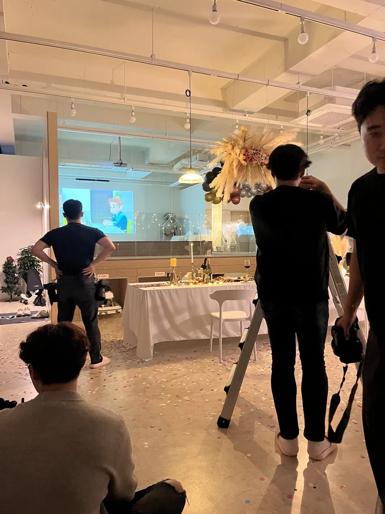
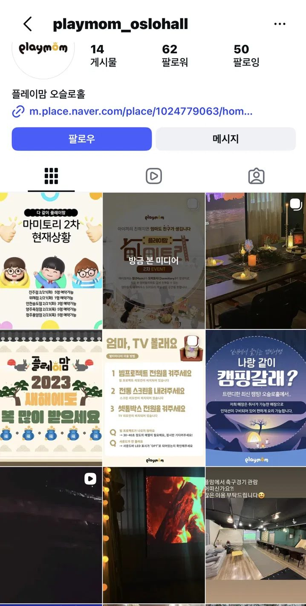
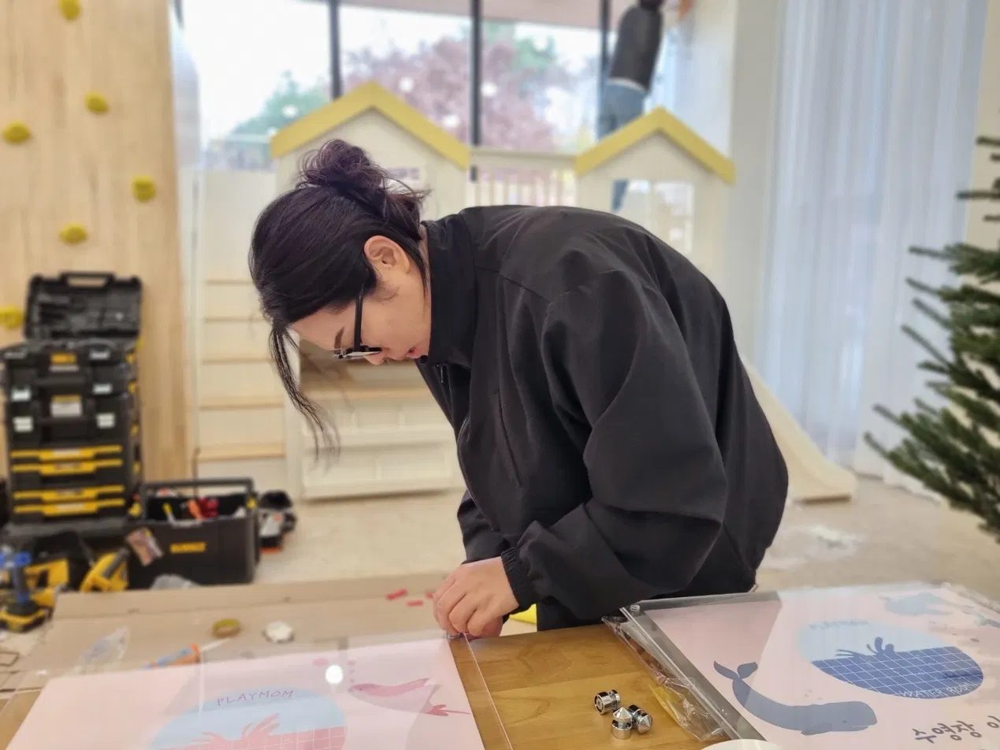
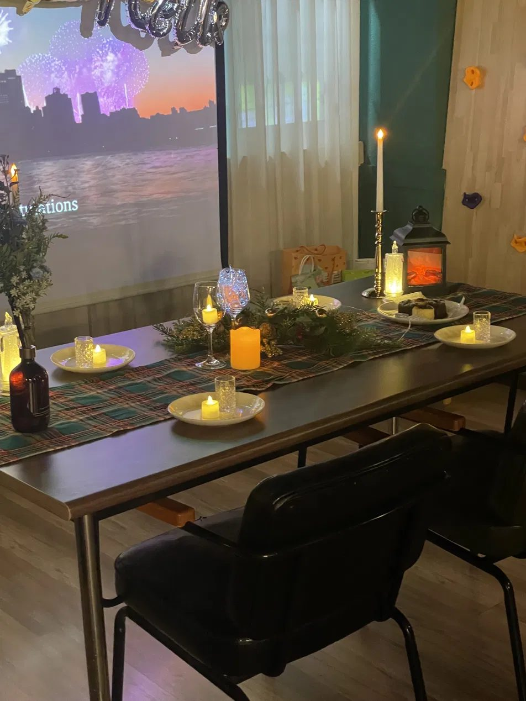

"개인의 머릿속에 있던 운영 노하우를 55개 매장이 공유하는 자산으로"

55개 매장이 각자의 방식으로 운영되어 노하우가 개인에게만 남는 구조였습니다. 새 매장이 열릴 때마다 같은 문제가 반복되었고, 본사에는 유사한 문의가 계속 들어오는 상태였습니다.
문제는 "매뉴얼이 없다"가 아니라, "매뉴얼이 · 채널이 · 온보딩이 · 검증이" 모두 없거나 흩어져 있다는 것이었습니다. 네 방향에서 동시에 접근했습니다.
단순 문서화가 아니라 "점주가 스스로 찾아서 해결할 수 있는 단위"로 매뉴얼을 잘게 쪼갰습니다. 유형별로 분류하고, 필요할 때 검색 가능한 구조로 만들었습니다.
가장 큰 성과는 특정 문서가 아니라, '이제부터는 이 방식으로 한다'는 조직 표준이 생겼다는 것입니다.



매뉴얼은 "문서"가 아니라 "조직이 반복 학습을 절약하는 도구"입니다.
이 관점이 이후 ThinkWise 매뉴얼 설계까지 그대로 이어졌습니다. "이 문서는 조직이 반복 학습을 절약하기 위한 것"이라는 원칙을 기준으로 매뉴얼을 잘게 쪼개고, 카테고리화하고, 접근 가능한 구조로 만드는 방식은, 55개 매장 · SaaS 사용자 · AI 교육 수강생 어느 대상이든 동일하게 적용됩니다.